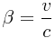
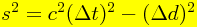
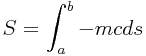
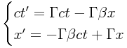
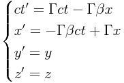

Special Relativity (SR) is the theory of space and time discovered by Albert Einstein in 1905.
SR is an extraordinary theory:
The mathematical simplicity of SR means it can be taught to young people. Because its core mathematics is no more complicated than a simple square root, there's no big mathematical barrier to learning the subject. SR is also very graphical: space-time diagrams often help to illustrate ideas and guide your thoughts.
That's quite unusual. Most subjects in physics need university-level mathematics for a deep understanding. Not so with special relativity. You can get a deep understanding of the subject without advanced math.
It's remarkable that more than 100 years after its discovery, this extraordinary theory, with its mathematical simplicity and strange ideas about space and time, is not taught more widely.
SR shows that our ideas about space and time are wrong. Our puny human experience with space and time is limited to a small domain - the domain of low speeds. This makes it hard for us to understand what's really going on. When we gain experience with high speeds (approaching the speed of light), we see clearly that our ideas about space and time, ideas which we humans have had since the dawn of time, are completely wrong in the domain of high speeds.
SR lets you understand the rules for time machines. Time machines into the past are impossible. Time machines going into the future are possible, and use high speeds (or strong gravity fields).
SR has a Rule Zero: a rule for making all the other rules. This Rule Zero is interesting because it's a set of handcuffs: it's very tightly constraining. Being tightly constrained is a good thing for a scientific theory, because it's easier to falsify. The handcuffs come from ideas about transformations (of inertial frames of reference) and invariance. With SR, fundamental physics starts to be guided by these important ideas. Some consider this to be the most important thing about SR.
SR is mathematically simple. If you know what a square root is, then you can understand the core of SR. For bonus points, if you're not afraid of a cosine, then you can understand what SR says about optics (photons and light rays).
SR is a reboot of physics. It goes back to the start, and fixes a big mistake. When modern physics began in the 1600s, people had certain ideas about space and time. We now know that some of those ideas were wrong. (This was completely natural, since they had no data for things moving at really high speeds.) Albert Einstein was the first person to figure this out. He pointed out the mistake, which has to do with time. In short, the mistake was assuming that time is absolute. Instead of absolute time, there's an absolute speed limit, and an absolute space-time interval (see below).
When you learn SR, you get to understand how time dilation works. The discovery of time dilation is one of the most important discoveries in all of science. Some have compared its discovery with the discovery that the Earth is spherical, for instance.
When you know SR well, you can spot a common mistake - the mistake of forgetting about time dilation. (This mistake can even be made by professional physicists who should know better. In some cases, they know the theory, but haven't fully understood what it means.) Take this statement as an example: 'The Pleiades are 400 light-years away. So, it will take at least 400 years travelling at near light speed to get there.' This statement is correct only in the world of Isaac Newton. In the world of SR, this statement, in unqualified form, is wrong. Why? Because in the world of SR, the time between two events, in general, depends on who's doing the talking. For a traveller going to the Pleiades at near light speed, the time that they care about is the time on their own wristwatch. And measured by their own wristwatch, that time is going to be less than 400 years. In principle, there's no minimum travel-time, as measured by the traveller. The closer you get to light speed, the smaller the travel-time becomes. That's time dilation.
Speeds:
Inertial Grids:
1. Draw a straight line from A to B.
This isn't very good, because there's no information about the speed of the ball. So this picture is incomplete.
2. Draw a straight line from A to B, but also add tick marks to the the line, indicating its position once per second.
This is better, because it has information about both the position and the speed. You could say that the first try has only information about where, and the second try has information about both where and when.
3. Draw a curve in space-time. To do that, just represent the time as another coordinate in the diagram, at a right angle to the x-axis.
In this case, the 1-dimensional line is replaced by a 2-dimensional plane. The tick marks that were used to show the time are replaced by a time coordinate. The time axis is placed vertically here, simply to follow a common convention. This is a 2-dimensional space-time. The points in this plane are events, consisting of a where (x) and a when (t). The path of the ball is a continuous sequence of connected events in space-time, which form its history, or world-line. (Another name for it could be timeline, but that is not commonly used.)
When the ball is standing still, the history is vertical. When the ball is moving, the history bends away from the vertical. The faster the ball is moving, the more its history bends away from the vertical.
In order to make these diagrams, you need convert the unit of time (seconds) into a unit of distance (meters). The conversion looks like this:
seconds * (meters / second) => metersThe conversion factor is a constant having the unit of speed (meters per second). The speed you pick is up to you. But, as explained below, most of the time the speed is chosen to be Nature's speed limit c (see below).
The basic idea of space-time is to convert times to lengths, and simply pretend that this time/length is an extra dimension, in addition to the space dimensions. It's important to understand that space-time, with its 'extra' dimension of time, is a geometrical idea, a mental abstraction. It's not something you can physically point to.
The idea of representing the path of an object as a curve in space-time is not just a mathematical curiosity. Space-time actually has a lot of interesting and important geometrical structure. Nature has many important rules that can be stated elegantly only using the idea of space-time. Indeed, it's not an exaggeration to say that the geometry of space-time is at the very core of modern physics.
Sharp corners in the history correspond to abrupt changes in the motion. Gradual changes in speed are shown with curving lines.
These simple animations also show how simple motions appear as histories in space-time.
These are diagrams of space, not space-time.
The idea of course is to use numbers to describe the events in an object's history. Let's take the 3D case (3 space dimensions):
Now we have a system for measuring the positions of things in space, combined with many stationary, synchronized clocks (or sensors) spread out over that system to measure the time as well. Calling them sensors instead of clocks is useful, since they have to detect and record local events.
Now picture making measurements with such a grid. Imagine being in interstellar space, building a grid, and then throwing things through the grid. As the object passes by each sensor, the sensor detects the object, and records the event: at time t, the object was at some sensor location (x,y,z). The sum total of all these events (t,x,y,z) is a measurement of the history of the object. You could imagine a master computer that gathers together all these events, and rebuilds the history of the object.
There are ways of making measurements that don't use grids. For example, in astronomy, there is only a single sensor (the telescope), not many, so there's no grid at all. The reason grids are emphasized here is that it's the simplest way to describe the basic rules of how measurements of space and time work. The key point is this: grids are simplest because each sensor is responsible for recording only the local events that happen in its own little neighbourhood. Any other way of looking at measurements is more complicated.
To summarize, when you think of a grid, you should have this sort of picture in your head:
The trick is to preset the start-time of each clock to a certain value. That value is calculated using the known distance Δd of the clock from the reference clock, and the formula cΔt = Δd.
However, in the radar base setup:
It's important to understand that a camera is not a grid. A grid is always a collection of a large number of sensors, not just one. With a grid, you can make calculations using numbers from multiple sensors (as seen below). With a camera, you can't do that, since there's only one sensor. These perspectives are different, and must be kept in mind.
The question of what a camera (or your own eye) actually sees is an interesting one. It's also a practical one, since astronomers use such sensors in their instruments, to view the behaviour of objects having large speeds (jets, active galactic nuclei, and so on). We'll return to this later, in Part II.
Many SR books use the word observer. That term is completely avoided here, because it's very unclear. The word observer, in ordinary language, means a single thing. But in SR, in most cases, the word observer is really referring to a grid. And grids are made up of many things, not one.
In an inertial grid, the speed and direction of motion of a freely moving object doesn't change.
Important: in English, the word acceleration means to speed up. But in physics, the word acceleration is more broad, and means any kind of a change in how an object is moving:
In principle, there are an infinite number of possible inertial grids. The raw measurements of event coordinates made in each grid are specific to that grid, and only that grid. The event coordinates don't match between grids.
The above set of transformations is an example of what mathematicians call a group. Some physicists call this group the Poincaré group, but the jargon varies among authors. (Many authors make no mention of reflections in space or time.) The transformations of the Poincaré group leave the space-time interval invariant (see below). This is called Poincaré invariance.
If you have an inertial grid to start with, then you can gleefully mix and match the above transformations in any way you want, and you will always end up with another inertial grid; you will always stay within the inertial grid family. (You can explore these transformations using this animation.)
But if you go outside the above kinds of transformations, then you are outside the family. You'll have a non-inertial grid, in which the motion of a freely moving object isn't uniform. Here are some examples of non-inertial grids:
| If Symmetric Under | Then This Item Is Conserved |
|---|---|
| Displacement in time | Energy |
| Displacement in space | Momentum |
| Reorientation in space | Angular Momentum |
Questions:
One way of moving from the specific to the universal is to hunt for special combinations of quantities, calculated (derived) from the raw data, that happen to have the same value for all members of the inertial grid family. If you find such a combination, then you'll likely be able to make a new rule of physics with it. This leads to an important definition:
If a quantity is the same for all members of the inertial grid family, then it's said to be an invariant quantity.
(For brevity, this site will always use the word invariant in the above sense, as applying to all members of the inertial grid family.) Here are some examples of the many invariant quantities that have been found:
"Invariants...play a more important role in our understanding of the world than quantities that vary from one frame of reference to another.
The theory of relativity identifies such invariant quantities, and in this sense 'theory of relativity' is a terrible name. 'Theory of invariance' would
have been better, since the most important content of the theory is its identification of quantities that do not change from frame to frame."
- David Mermin, It's About Time
One of the main points of SR is that it changes the list of things that are invariant versus relative. Here's a list of some items of note (the list is incomplete):
| Item | Before SR (Newton) | SR (Einstein) | Comment |
|---|---|---|---|
| Simultaneous events | invariant | relative | Newton's time was absolute |
| Time between events | invariant | relative | Newton's time was absolute |
| Rate of a moving clock | invariant | relative | Newton's time was absolute |
| Length of a moving stick | invariant | relative | SR has the pancake effect |
| Spatial geometry of an object | invariant | relative | SR has the pancake effect |
| Distance between events | relative | relative | Was always relative, even before SR |
| Frequency of light | relative | relative | Doppler effect was known before SR |
| Direction of light | relative | relative | Aberration of light was known before SR |
At a very young age, we learn what might be called Newtonian ideas about space and time. When learning to speak, our vocabulary and language are strongly influenced by those Newtonian ideas. The problem is that those ideas are wrong. So, in a sense, our language is wrong too.
When moving from the old world of Newton to the new world of Einstein, what should we do with the old words, such as space and time?
There are two choices:
Re-pointing the old words to the new ideas is problematic. The old words are strongly contaminated, and unconsciously mislead you down the path of error and confusion. This happens especially with things that are invariant in Newton's world, but relative in Einstein's world.
Using new words for the new ideas seems to be the safer option. This web page uses a simple trick to reflect the important distinction between relative and invariant physical quantities, which is at the core of the theory. (Warning: this trick isn't used by other authors.)
Here (in Part I), quantities that are relational as classified as rel-properties, and given the conventional prefix rel:
While invariant quantities are given no special prefix:
This is certainly repetitive, since most physical quantities are relative. But it clarifies your thought by removing Newtonian impurities from your language.
Clarity of thought and clarity of language are one and the same thing, so this issue is of some importance.
Rules must be expressible using only invariants.
In a sense, relativity is the search for invariants - the search for what we can all agree on. This is a kind of mission statement, which starts a quest to find out what these invariants are, and what are their consequences. The most beautiful thing about this rule is that it's so deeply constraining. Constraints don't hurt a scientific theory, they actually help it, by making it easier to falsify.
It's also unnecessary. The fundamental covariant differential equations can be derived from a corresponding action integral. Action integrals are scalar invariants - quantities that are the same for all inertial grids. Hence, the principle of relativity can (and should) be stated in a simple form which speaks only of invariants - physical quantities that can be related to measurements - as opposed to more abstract ideas about the form of covariant equations.
There's an invariant universal speed limit for all signals.
What's a signal? A physical object (matter, radiation) that moves a packet of energy from one place to another. So, the above rule says that no signal is instantaneous, and that the speed of any signal, anywhere in the Universe, at any time in the history of the Universe, can only be between 0 and a fixed maximum speed, as measured locally in any inertial grid. The speed limit is a universal constant: it's the same at all times, and in all places.
Is this rule consistent with the rule-about-rules? Yes, because it speaks only about an invariant (the speed limit). In fact, the speed limit rule is simply an assertion that a certain invariant exists.
The value of the speed limit is 299,792,458 meters per second, usually denoted by the letter c. Most people refer to this speed as the speed of light. But that's not the best way to think about it. For one thing, it's the speed of any massless particle, not just the speed of photons. The most important thing about this speed is that it's a speed limit for all signals.
The existence of this speed limit means that the night sky is a time machine. When you look up at night and gaze at the stars, the starlight you see has different rel-ages, from a minimum of 4.4 years (Alpha Centauri) to a maximum of 2.5 million years (the Andromeda Galaxy). The largest telescopes can detect light that is older than any dinosaur fossil, and even older than the Earth itself. The oldest light is the cosmic microwave background (detected by radio telescopes). Its photons were emitted about 380,000 years after the Big Bang, which gives them a rel-age of about 13.8 billion years old. In this sense, astronomers are also archaeologists, looking backwards in time, using a fossil record made of light. The light has travelled undisturbed for even billions of years, until, at last, in a final act before ceasing to be, it offers up its quantum of energy, perfectly preserved for aeons, into the waiting bucket of a telescope, pointed by a curious human towards the night sky.
Here's where the fun begins. You can combine the speed limit rule with the rule-about-rules, and that's when weird things start to happen. If the speed limit rule is valid, then all inertial grids need to measure the same value for the speed limit. But remember that one of the allowable transformations for the inertial grid family talks about a boost, where one inertial grid is moving with respect to another. If two inertial grids are moving with respect to each other, then how can they possibly agree on the speed of anything? Most importantly, how could they measure the same value for the speed limit?
So it appears that the these ideas are a complete failure, since they seem to contradict each other. But they actually don't contradict each other. The reasoning above is wrong because it assumes that speeds always behave as they do at low speeds. They don't. When speeds approach the speed limit, the behavior of measurements of space and time gets weird. This is the crux of the matter: if you insist that the speed limit rule and the rule-about-rules are both valid, then you are forced into a serious re-examination of the basic facts regarding measurements of distance and time.
| Description | Rel-Speed β = v/c |
|---|---|
| Jets in microquasars | ~0.95 (max) |
| Secondary cosmic rays - muons at sea-level | ~0.99 (mean) |
| Electrons from radioactive decays | ~0.99 (max) |
| Protons in the Large Hadron Collider | 0.9999999895816072 |
| Primary cosmic rays - most energetic | 0.99999999999999999999995598229 |
The existence of a speed limit in Nature means we can use it as a natural unit for any rel-speed. Just state the rel-speed as a simple fraction or percentage of the speed limit. In relativity, rel-speeds are usually stated in this way, using the conventional Greek letter β (beta), as in β = v/c. When the rel-speed is a significant fraction of c, the motion is called relativistic. If β is nearly 1, the motion is called ultra-relativistic.

For most people, the speed limit seems incredibly fast. But for most astronomical situations, the speed limit is actually very slow, because the distances are so big. How much rel-time does it take a photon to go from the Sun to the Earth, as viewed from the Earth? A little over 8 minutes. Even the Sun itself is so big that a photon needs 4.64s just to go a distance equal to the Sun's diameter. News may travel fast on Earth, but it sure doesn't in space. See this animation for a simple demonstration.
In English, the words speed and velocity mean the same thing, but in physics, they don't:
(meters/second) x seconds = metersThus, the rel-time axis will have the same unit as the 3 rel-space axes (meters, for example).
Second, anything moving at the speed limit will be represented as a line at an angle of 45° with respect to the vertical. This angle is invariant, and will always be the same in all grids. Since the speed limit is so important, it's nice to have it appear in such a simple way. (It's also easy to draw.)
If no object can travel faster than the speed limit c, then in diagrams using ct instead of t, the tangent of the history of any moving object can never be at an angle greater than 45° with respect to the vertical.
We know how to draw the history for an object having β=0 (not moving at all) and β=1 (moving at the speed limit). But what about values of β between 0 and 1? How do you draw those? Well, that's pretty easy as well. You can find its rel-angle with respect to the vertical using a simple geometrical construction, using your space-time diagram and a ruler. The example below is for β=0.3. As you can see, the trick is to take your ruler and divide the line BC into equal parts. It's important to understand that the tick marks on BC are evenly spaced, but the corresponding angles with respect to the vertical are not.
| β | Angle |
|---|---|
| 0.60 | 31.0° |
| 0.70 | 35.0° |
| 0.75 | 36.9° |
| 0.80 | 38.7° |
| 0.90 | 42.0° |
| 0.95 | 43.5° |
| 0.99 | 44.7° |
| β | Angle |
|---|---|
| 0.00 | 00.0° |
| 0.10 | 05.7° |
| 0.20 | 11.3° |
| 0.25 | 14.0° |
| 0.30 | 16.7° |
| 0.40 | 21.8° |
| 0.50 | 26.6° |

| Symbol | Means |
|---|---|
| s2 | the square of space-time interval between the 2 events |
| c | the speed limit |
| Δt | the rel-time interval between the 2 events |
| Δd | the rel-distance between the 2 events |
Each pair of events has a value for s2. The value may be positive, negative, or 0. When s2 is negative, the value of s is imaginary. (Warning: people often refer to both s and s2 as the interval, but that's sloppy language.) To state it explicitly, the rule is this:
The value of s2 for any two events is invariant.
The rel-space-interval Δd has always been specific to a grid: when one grid is moving with respect to another, then the distance Δd between 2 events will, in general, vary between the 2 grids. That's not new. What is new is that the same applies to the rel-time-interval Δt as well. That's new, because when modern physics began in the 1600s, the rel-time-interval was assumed to be an invariant time-interval. But that was a fundamental mistake. Instead, it's the space-time interval s, constructed from the rel-space-interval Δd and the rel-time-interval Δt, that's really universal, and neither of its parts. That is, rel-time is specific to a grid, not universal.
Roughly speaking, rel-time and rel-space can be converted into each other, but only as long as s2 stays the same.
Another important thing to know about s2 is this:
The formula for s2 defines the geometry of space-time.
Here's a summary of what has been covered so far:
It's not actually necessary to define
c2(Δt)2 - (Δd)2
as being the square of something (for example, see Robert Wald, General Relativity).
s2 = c2Δt2 - Δd2
Instead of the more correct:
s2 = c2(Δt)2 - (Δd)2
This site always uses:
s2 = c2(Δt)2 - (Δd)2
But many authors use:
s2 = -c2(Δt)2 + (Δd)2
Examples of the jargon used by various authors:
| Reference | Author's Jargon | Unit | Author's Formula |
|---|---|---|---|
| Landau and Lifshitz | interval s | meter | ds2 = c2dt2 - dx2 - dy2 - dz2 |
| Hermann Minkowski | quadratic differential expression | meter2 | c2dt2 - dx2 - dy2 - dz2 |
| Hermann Minkowski | proper time τ | second | cdτ = [c2dt2 - dx2 - dy2 - dz2]1/2 |
| Sean Carroll | interval s | meter | s2 = -(cΔt)2 + (Δx)2 + (Δy)2 + (Δz)2 |
| Robert Wald | interval I | second2 | I = - (Δt)2 + (1/c2)[(Δx)2 + (Δy)2 + (Δz)2] |
| J. L. Synge | fundamental form Φ | meter2 | Φ = - c2dt2 + dx2 + dy2 + dz2 |
The events having s2 = 0 with respect to A are said to have a light-like relation to A. In a two-dimensional space-time diagram, they form diagonal lines making a big X centered on A. If you add another space dimension, then these events will be in the shape of two cones with their pointy ends at A, with one cone opening upwards along the +ct axis, called the future light cone, and the other cone opening downwards along the -ct axis, called the past light cone. Both of these cones taken together are called the light cone of the event A. The history of any object travelling through event A at the speed limit will be somewhere on the light cone of A.
The light cone of event A divides the Universe neatly into three parts:
The s2 > 0 events are centered on the time-axis. They are said to have a time-like relation with A. They are separated into two unconnected regions, according to whether or not the other event happens before or after event A. The region inside the past light cone is called the absolute past (or just the past) of A, and the region inside the future light cone is called the absolute future (or just the future) of A.
The s2 < 0 events are centered on the spatial axes. They are said to have a space-like relation with A. In the two-dimensional space-time diagram, it looks as if there are two unconnected negative regions, but that's not correct. When another space dimension is added (as in the middle diagram above), you can see that it's all connected together, on the outside of the light cone, and there's only one such negative region, not two. It's called the absolute elsewhere (or just the elsewhere).
Note that events can't cross over from one region to another when you change grids. That would violate the rules, since it would change the value of the s2. For example, if an event is in the past of event A according to one inertial grid, then it must be in the past of event A for all inertial grids.
In his book The Road To Reality, Roger Penrose writes that, in his opinion, SR was not really complete until Minkowski made his contribution.
If two events are related as cause and effect, then the cause must always precede the effect. In a space-time diagram, if event A is the cause of event B, then B must be able to receive a signal from A; in other words, B must be in the future of A.
For any history, you can construct a light cone at any event along the history. Again, because of the limiting nature of the speed limit, the entire history will always remain inside the light cone.
c2(Δt)2 - (Δd)2 = constantGeometrically, this equation defines a hyperbola in space-time near the event A. For different values of the constant, you get different hyperbolas. In a 2-dimensional space-time diagram, the hyperbola is a curve. If you add another space dimension, the hyperbola is a surface (called a hyperboloid of revolution).
There are two cases, according to the sign of the constant:
The most important point about hyperbolas is that they approach limits: they get closer and closer to straight lines, called asymptotes, but never actually touch them. Hyperbolas are said to be asymptotic. In our case, the light cone is an asymptote. In special relativity, this sort of asymptotic behavior is seen again and again. For example, a moving object having mass can approach the speed limit, but it can never reach it.
If you had to describe space-time using a single word, that word would be hyperbolic.
These surfaces appear repeatedly in special relativity. Instead of calling them "hyperbolas of constant s2", this site uses the more concise term interval shell (or simply shell for short).
So although space and time can, to some extent, be transformed into each other in a change of reference frame, there are certain limits on this transformation, in the sense that an interval inside the light cone cannot be transformed into one outside the light cone, or on the light cone.
So a certain subtle kind of difference between space and time is preserved (in the sense of a lack of complete interchangeability under transformation)....
These space-time diagrams, showing constant s2 with respect to an event, can actually be viewed or interpreted in two different ways:
The second interpretation is usually the more interesting, since it relates directly to one of the main rules: s2 between any two events is invariant across all inertial grids. So, you can use these sorts of diagrams to examine how the rel-coordinates of an event B will change with respect to an event A, when measured in grids that are moving around with respect to each other. The event B can change its rel-coordinates with respect to A, but it can only do so in accordance with the rule that the A-to-B square-interval must remain the same. In other words, the rel-coordinates of B relative to A must remain on the same interval shell, as seen from any inertial grid. (There's a second rule: in the time-like case, event B is not allowed to go from the past of A to the future of A, or vice versa.)
In principle, the measurement of rel-time dilation in the lab is simple. (See this video from 1962 for a demonstration of measuring rel-time dilation with muons.) In the following diagram, the clock X moves past two stationary clocks A and B.
Pay attention to 2 events: X coincides with A, and X coincides with B.
For both of these events, you take the readings on the two clocks. You will have 2 readings for X, and 1 reading each for A and B. Question: is the time interval between these 2 events the same, as measured by the 1 moving clock, and the 2 stationary clocks? The answer is no.
It's helpful to write it as a ratio, where the numerator is the difference in readings on the 2 stationary clocks (A and B), and the denominator is the difference in readings on the 1 moving clock (X).
(B - A) / ΔX
Experimentally, what you find is that the ratio is not 1.0, but greater than 1.0:
(B - A) / ΔX > 1.0
The strangest part of special relativity is this effect, called rel-time dilation. At low speeds, the ratio is very close to 1.0, and the effect is hard to detect. But as the moving clock moves faster and faster, the ratio gets larger and larger. A moving clock runs slowly with respect to two stationary clocks.
To say simply that a moving clock runs slowly leads you down the path of error. It implies that the clock is running slowly in and of itself. That's false. The moving clock is not running slowly in and of itself. It's running slowly only in relation to the stationary clocks. Rel-time dilation is always relational.
Here we have the unboosted grid G (in black) with unprimed rel-coordinates (ct,x), and the boosted grid G' (in red) with primed rel-coordinates (ct',x'). These two grids are almost the same. Their spatial axes all point in the same directions, and the two grids completely coincide when ct = ct' = 0. (The terms boosted and unboosted are just conventional names. Of course, labeling one as stationary and one as moving is entirely relative.)
The only difference is that the boosted grid (in red) moves along the x-axis, in either the positive or negative direction, with respect to unboosted grid (in black). Here, β is a rel-velocity - it has both a size (the rel-speed) and a rel-direction (along the + or - x-axis, as indicated by the sign of β).
If desired, you can add y- and z-axes to this picture, with y parallel to y', and z parallel to z'.
Let's use two grids in the standard configuration.
Pretend you're an astronaut in a spacecraft attached to the boosted grid, moving through space at a rel-speed of β=0.87 with respect to a second spacecraft attached to the unboosted grid. You need to stay in good physical condition, so you exercise every day. You always start by skipping rope. (In the weightlessness of space, you are perhaps standing on the rim of a rotating wheel.) When you skip rope, you count the number of skips you've taken, and your movements are very regular. In effect, you're acting like a human clock, repeating the same motions with a regular beat. Let's look at one full skip, and how it appears in space-time diagrams. There will be two events defining a skip:
The space-time diagram on the right is a bit unusual, since it combines information from two different grids. This just makes it easier to compare their measurements. Note that the event B appears twice in the last diagram, once for each grid. This is intentional, since it's the exact same event, as measured in the two different grids. Let's review what these diagrams are saying.
In the boosted grid, the events are separated by a time, but not by a distance, since they happen at the same place, as measured in the boosted grid. A typical value for the time between A and B would be about 0.5 seconds, for skipping rope. The value of the squared interval, for this grid, depends only on the rel-time interval, since the rel-space interval (the rel-distance) is 0:
s2 = c2 * (Δt)2 - (Δx)2
s2 = (300,000)2 * (0.5)2 - 0 m2The interval shell corresponding to this value is shown in the third diagram above. It must necessarily connect the two B's on the diagram, because of the basic rule that says that the square-interval between two events is invariant for all inertial grids.
In the unboosted grid, the events are separated by both a time and a distance, since the boosted spacecraft is moving swiftly with respect to it. And, of course, the event B must be on the interval shell.
Next, if you compare just the rel-time interval between A and B, along the vertical ct axis only, as measured in the two grids, you can see there's a large disagreement. If you actually measure it on the screen, you'll see that the unboosted rel-time interval is twice the boosted rel-time interval. If the boosted rel-time interval for skipping the rope is 0.5s, then the unboosted rel-time interval is 1.0s. (The value of β=0.87 was chosen specifically to get this doubling. For other values of β, the factor is different.) You can also see from the shape of the interval shell that the disagreement in the rel-time intervals is very small when β is small, and gets increasingly large as β increases.
We can draw this stunning conclusion:
Rel-time intervals are indeed relative, not invariant. Rel-time is not absolute.
That is, measurements of rel-time intervals are specific to a grid, not universal. That is, it's only s2 between two events which is invariant. The rel-time interval between events can take different values, according to the grid used to make the measurements.
Here's a good way to describe time dilation: a moving clock runs slowly with respect to two stationary clocks.
Does an astronaut on the boosted spacecraft feel anything strange in their experience of time? No. The astronaut experiences no change at all in their experience. The fact that the boosted spacecraft is moving with respect to the unboosted one makes no difference at all to the astronauts on the boosted spacecraft. It's only the boosted clock as seen from unboosted grid that slows down. But, from the point of view of the unboosted grid, those measurements are completely real. From the perspective of the unboosted grid absolutely everything sloooooows doooooown on the boosted spacecraft, including, for example:
An excellent mental picture of time dilation comes from musical recordings on magnetic tape. If the tape is recorded at one speed, and then played back at a slower speed, then the playback will sound different from the original in two ways:
It's important to recall here something mentioned earlier: a grid is a grid of sensors having synchronized clocks, each of which records only the nearby events. That is, there are many sensors in a grid, not just one. So, for our astronaut skipping rope on the boosted spacecraft, the times recorded for the two events A and B in the boosted and unboosted grids are recorded by different sensors. In fact, the various measurements shown above involve 3 different sensors - one in the boosted grid, and two in the unboosted grid.
What happens when you reverse the perspective, and switch the boosted and unboosted grids? You see the same effect - the physics on the moving object goes slowly with respect to stationary clocks. On the surface, this seems to be a contradiction: how can the physics be slowed down on both spacecraft at the same time?
It's actually not a contradiction, because there are two things wrong:
To see this, just look at it carefully from both perspectives, and think about how the measurements are made.
In the following diagram, first we have clocks X,Y moving past clocks A,B. Then we have the opposite perspective on the same situation: clocks A,B moving past clocks X,Y (in the opposite direction, of course). There are 4 clocks in total, 2 attached to each grid.
To measure the rel-time dilation effect in a given grid, you use only 3 of the 4 clocks, and you ignore the remaining one. You can write it like this, where the numerator is the difference in readings on 2 stationary clocks, and the denominator is the difference in readings on 1 moving clock:
(B - A) / ΔX > 1.0
(Y - X ) / ΔA > 1.0
The main point is that both of these ratios are greater than 1.0.
In the first case, we choose to ignore Y, in the second we choose to ignore B. SR simply says that these two ratios are equal.
(B - A) / ΔX = (Y - X) / ΔA
But note that the two sides come from different measurements. That's why there's no contradiction between the two perspectives.
The warp factor γ depends only on β. It increases slowly from 1, and then increases very rapidly as β approaches 1. It has no upper limit, and increases without bound.
Our direct human experience is confined to the region where γ is very close to 1. This is why we grow up with Newtonian ideas of space and time, and not Einsteinian ones.
| β | γ |
|---|---|
| 0.00 | 1.0 |
| 0.75 | 1.5 |
| 0.87 | 2.0 |
| 0.98 | 5.0 |
| 0.99 | 7.1 |
| 0.995 | 10.0 |
The diagram on the left is interesting, since it combines three important things all in one picture: the speed β, the interval shell, and the warp factor γ. Here's a larger version of the same diagram, suitable for printing. There's also an animated version. You can use that diagram to find the warp factor corresponding to each value of β, simply by drawing two lines: one for the speed β, to find its intersection with the hyperbola; then a second line, going horizontally over to the left, to find the corresponding value of γ. Here's an example, using β=0.75, showing that γ is 1.5:
The formula for γ is simply:
In the boosted grid, the interval was measured just with a single sensor clock in the boosted spacecraft, because there was no rel-distance between the two events A and B:
s2 = c2 * (Δt)2 - (Δx)2 s2 = c2 * (Δt)2 - 0 s = c * (Δt)This is true in the boosted grid, but not for any grid which is moving with respect to it.
In general: for any events A and B that have a time-like separation, you can always find a grid in which the the spatial rel-distance between A and B is 0. This just corresponds to the lowest point of the interval shell. In such a grid, the interval is measured just by a single sensor clock in that grid, located at the same position as A and B. The rel-time interval measured by such a sensor clock is called proper time (wristwatch-time), but it's important to remember that the proper time is just the same old space-time interval, measured in a certain way.
Let's return to the example of the two spacecraft attached to grids in the standard configuration. Let's focus on the history of a single sensor, a sensor belonging to the boosted grid, but let's record that history in both the boosted grid and the unboosted grid. This is almost the same space-time diagram as before, but now we have a full history of the sensor, not just two separate events.
In the boosted grid, the sensor doesn't move, β=0. In the unboosted grid, the boosted-grid sensor is moving at β=0.87. The dots show three ticks of the sensor's clock. You can easily see the effect of rel-time dilation. As the boosted-grid sensor passes through the unboosted grid, it shares its current time reading with the various sensors in the unboosted grid it meets along the way. (Remember that these sensors only record local events.) Note that the sensors in the unboosted grid record an event like this, for example: at a time of 6.0s in the unboosted grid, the passing boosted-grid sensor says that its own time was 3.0s.
It's important to have this exact picture in your head when thinking about rel-time dilation. The clock moves through a sensor grid, and as it moves through the grid, the moving clock's time is compared with the time on the many grid sensors it meets along the way. To see the effect of rel-time dilation, you need at least 3 clocks: the moving clock, and at least 2 stationary sensors to compare it to.
This example uses a sensor clock, but the same effect is seen with any object. If a banana takes 7 days to turn brown on a spacecraft attached to the boosted grid, then, according to the the sensor readings in the unboosted grid, it will take 14 days (if β=0.87).
So, for an astronaut on the boosted spacecraft, the travel-time to any destination can approach zero time.
Here's an example, using a proton in the Large Hadron Collider. Pretend that one of these protons is sent on a proton vacation to the Pleiades, a cluster of stars about 385 rel-light-years from Earth. If you were able to attach a wristwatch to this proton, what would it record as the travel-time of the proton to the Pleiades?
The answer is given by our friend, the warp factor γ. Here are the numbers:
β = 0.99999998958
γ = 6928
Travel-time on the proton's wristwatch:
= 385 years / 6928
= 20 days, 7 hours
This is a stunning fact.
There is a universal speed limit c, but from the point of view
of an actual traveller, this does not limit the wristwatch travel-time seen by a traveller in any way.
In principle, a traveller's wristwatch travel-time from any place in the Universe to any other place in the Universe
can be made as small as desired, by getting closer to the speed limit. Zounds!
As β approaches 1 and γ climbs higher and higher, rel-time dilation lets you travel quickly to the stars.
You can also look at it this way: when you take a trip, the rel-distance travelled is shown by your odometer. Everyone knows that its reading depends on the route you took. If you took a longer route, the odometer shows a larger number. But a similar sort of thing can also be said of the elapsed rel-time on your wristwatch. If two people leave from event A, separate, and then arrive later simultaneously at event B, then the elapsed rel-time on their watches won't agree, and will depend on the details of how they made the trip. Again, rel-time is specific to a grid, not universal.
In an inertial grid, a freely moving object moves without any acceleration. It doesn't change rel-speed, and it doesn't change the rel-direction in which it's moving. In a space-time diagram, the history of a freely moving object is the simplest kind of history - a straight line, at some angle with respect to the vertical ct axis. For any such object, we know that we can pick a grid where the object is at rest; in that grid, the history is a vertical line.
So, the above scenario with the children going out to play looks like this in space-time, where, for convenience, we've chosen a grid in which the parent isn't moving:
Everyone's history joins event A to event B. Everyone starts out at one place-and-time (event A), and then they join up again at the same place at a later time (event B). The history for the stationary parent is vertical, while the histories for the running children wiggle around the vertical, because they run around while playing outside. In other words, the children's histories show accelerated motion, while the parent's history does not.
The histories of the parent and the children form a set of histories that share a start-event A and an end-event B. Other than that, they can wiggle around a bit in between. Let's call this a set of wiggle histories. It's useful to include the parent's history as being just another wiggle history, where the wiggle happens to be zero.
There are two ways of thinking about the motion of a freely moving object, between two events A and B:
As we saw before, the reading on the wristwatch, multiplied by c, is just the space-time interval. So, you can also say that uniform motion has the maximum total interval in comparison with the nearby wiggle histories.
Skipping the mathematical details, here's a summary of how an action principle works:
The invariants we've seen so far are simple - the speed limit c and the space-time squared interval s2. When you go searching for more invariants, guess what you find? Well, you often find action sums - or action integrals, as they are really called. We aren't going to look at these action integrals in detail here. But to give you a taste, here's the simplest action integral of all, the one for the motion of a freely moving object:

Here are the details:
The simplest case of a boost is just the standard configuration of two grids mentioned above:
Given the event rel-coordinates in the unboosted grid G (in black), the task is to find the rel-coordinates for the same event in the boosted grid G' (in red).
As always, each event must keep the same squared interval s2 with respect to the origin event. In each boosted grid, each event will 'flow' along its interval shell. Let's use one space-time diagram, to show how the rel-coordinates of 4 events (one for each part of space-time near the origin) will appear in different grids. The general direction of the flow looks like this:
Notice these things about the flow of events:
There are two ways of finding out the event rel-coordinates in the boosted grid G':
Both of these ways depend on just two numbers, our old friends β and γ. Let's start with the geometrical construction. Here are two examples, for β=+0.5 (grid G' moving to the right, in the +x direction), and β=-0.5 (grid G' moving to the left, in the -x direction):
These space-time diagrams are a bit unusual, since they have two sets of axes. The red set of axes for G' is at an oblique angle with respect to the black set of axes for G. Don't attach too much importance to the distorted appearance of the axes for the G' grid. The distortion isn't "real", it's just how the G' grid looks with respect to the G grid. From the G' grid's point of view, the G grid looks distorted, in a similar but reciprocal way (with β having the opposite sign).
The geometrical construction combines two things you've already seen before:
It's interesting that this geometrical construction exists. (Minkowski used a different construction in his Space and Time article.) But because the axes are bent, it's not possible to get a good feel for how histories really appear in the G' grid, since it doesn't have perpendicular axes.
Instead of this geometric construction, you can also easily calculate the event rel-coordinates in the G' grid. This will give you a better picture of how histories appear in a boosted grid. As you would expect from the above, the formulas depend only on c, β, and γ:

Let's call these equations the boost transformation. These equations describe how an event changes rel-coordinates during a boost from one inertial grid to another along the x axis.
Remember that -1<β<1. That is, β is the rel-velocity along the x axis, not just the rel-speed. It can be either positive (G' grid moving in the +x direction) or negative (G' grid moving in the -x direction).
When a square matrix multiplies a basis vector like (1,0), the result is simply one of the columns of the matrix itself. In our case, the event coordinates (1,0) and (0,1) are mapped to the two columns of the boost transformation. This provides another way of finding the axes of a boosted grid.
| (ct,x) in G | (ct',x') in G' |
|---|---|
| (1,0) | (γ, -γβ) |
| (0,1) | (-γβ, γ) |
| Name | Description | Num Events | Num Sets of Axes |
|---|---|---|---|
| Active | The boost "moves" the event | 2 | 1 |
| Passive | The boost "moves" the axes | 1 | 2 |
This web site usually uses the active style.
These two kinds of diagrams are simply different ways of describing the same physics. Both styles have their uses. Use whichever style makes sense to you in a given case. The names active and passive shouldn't be taken too literally. They are just convenient names for distinguishing the two styles.
The following examples show how a boost transforms the event (ct,x)=(1,0) from the unprimed grid (in black) to the primed grid (in red). The primed grid G' moves with respect to the unprimed grid G along the positive x-axis. The example shows both the active and passive styles of showing a boost in a space-time diagram.
This example also illustrates the effect of rel-time dilation, and the source of its γ factor.
In the unprimed grid G (black), two ticks of a stationary clock at x=0 are represented by:
The important point is that in the primed grid G' (red), the second tick has ct' = γ.
This shell shows the set of possible rel-coordinates for event B, as seen from different grids that are moving with respect to each other. Notice that event B can come before A (appears lower than A in the diagram), or it can come after A (appears higher than A in the diagram). It can also come at the same time as A (simultaneous). In other words, the time order of events having a space-like interval is not invariant. It can change between different grids.
If two events with a space-like interval are simultaneous in one grid, then they will not be simultaneous in a boosted grid. That is, the idea of two events being simultaneous is relative, not invariant. In other words, there is no universal now, and we can use the terms rel-simultaneous and rel-simultaneity.
The idea of using the rel prefix breaks down for the case of time-order. For time-like separations, the time-order is invariant, but for space-like separations, the time-order is relative.
In a given grid, you can consider the events having ct=constant. Let's call that a rel-time-slice. Those events are rel-simultaneous in that grid. But rel-time is relative, and a rel-time-slice in one grid G is not a rel-time-slice in a boosted grid G'. That is, events that are rel-simultaneous in grid G will not be rel-simultaneous in a boosted grid G'.
Remember that in a boost, the axes of the boosted grid are at an angle with respect to the unboosted grid:
In grid G, a rel-time-slice has ct=constant, parallel to the x axis. In grid G', a rel-time-slice has ct'=constant, parallel to the x' axis. The rel-time-slices in the two grids are never parallel, and can never represent the same set of events.
That no inherent meaning can be assigned to the simultaneity of distant events is the single most important lesson to be learned from relativity.
The notion that there is absolute simultaneity is a deeply ingrained one. The fact that there is no such notion is one of the most difficult ideas to adjust to in the theory of special relativity.
Earlier, we made some remarks above about cause and effect. Events that might be related by cause and effect must be in each other's light cone. They also have to keep the same order in time: the cause must always come before the effect. With space-like intervals, the opposite is the case. In summary:
| Separation of two events: | Time-like | Space-like |
|---|---|---|
| Time order is invariant: | yes | no |
| Cause-effect relation allowed: | yes | no |
| In each other's light cone: | yes | no |
Here, it's important to distinguish between these two ideas:
A grid measures the rel-coordinates of events, and it can easily measure the rel-distance between two events. But how does it measure the rel-distance between two objects, when they may be moving around?
To measure the rel-distance between two objects, you first need their space-time histories. Then you pick a rel-time, and draw a corresponding line (or flat surface) ct=constant in space-time. This line (or surface) will cut across the two histories. Let's call this a rel-time-slice. The rel-distance between the two objects at that rel-time, and in that grid, is then just the Δx along that line (or surface).
More generally, a rel-time-slice is used to define the spatial geometry of an object at a given time, in a given grid. Since rel-time runs differently in different grids, the geometry of an object is relative to a grid, and not invariant. So, anything related to the spatial geometry of an object should use the rel prefix.
Let's return to the standard configuration for two grids. Pretend that a spacecraft is attached to the boosted grid. Let's look at the spatial rel-geometry (especially the rel-size) of the spacecraft attached to the boosted grid, from the perspective of the unboosted grid.
In the boosted grid the spacecraft is at rest, and the rel-dimensions of the spacecraft have some fixed values. Since the direction of motion of the boosted spacecraft is in the x'-direction, then we might say, for example, that it has these rel-dimensions:
| Rel-dimension | Boosted Grid | Unboosted Grid | ||||||
|---|---|---|---|---|---|---|---|---|
| rel-length | 20 m | (20/γ) m
| rel-width | 8 m | 8 m
| rel-height | 5 m | 5 m
| |
For y and z, the rel-dimensions are the same, in this case. The rel-dimension of an object in the direction of motion is divided by γ (with γ calculated using the relative speed of the two grids). Since γ is greater than or equal to 1, that rel-dimension is smaller (contracted). The same can be said of the rel-volume of the moving object as well, with the rel-volume also divided by the same number γ.
Let's call this the pancake effect. It is highly directional. It takes place only in the direction of relative motion. The more usual name given to this effect is the Lorentz-Fitgerald length contraction.
An ultra-relativistic ball in a boosted grid is flattened into a pancake shape, as measured in an unboosted grid. When measured in the unboosted grid (using a rel-time-slice), its size along its direction of motion will be less than that of an identical, stationary ball. Of course, in the rest frame of the ball (the boosted grid), the ball remains round. The effect comes from the structure of space-time, not from physical changes in the objects themselves. This means that the rel-geometry of an object is indeed relative, not invariant. The rel-geometry of an object depends on the grid that's measuring it.
In general, the pancake effect distorts the rel-geometry of objects in their direction of motion. An object's spatial rel-geometry, defined as the intersection of a ct=constant rel-time-slice with its history, is relative to the grid that's measuring it.
The pancake effect flattens out angles. Take for example a grid in which a stick moves rapidly, and the stick is oriented at an angle to its direction of motion. The faster the stick moves, the more transverse it becomes to its direction of motion.
"If the rod's orientation is neither longitudinal nor transverse to the direction of relative motion, both the length and the
inclination are different in the rod's rest frame and the laboratory frame.
The inequality of [the angles of a stick with a direction of relative motion, in two different grids] is as much of an affront to pre-Einsteinian habit
as is the length contraction and the slowing down of clocks. A weathervane pointing northeast on a house flying east with speed such
that γ=2.4, points north-northeast in the ground frame!
Both rel-time dilation and rel-length contraction have the same underlying cause: the geometry of space-time. You can think of both of these effects as being two aspects of the same thing.
Both rel-time intervals Δt and rel-space intervals Δx are specific to a grid. They change values from one grid to another. The values of Δt and Δx in any one grid have no special status. For example, the assertion that the Pleiades has a rel-distance of 385 light years from the Earth is a statement attached to a specific grid comoving with the center of mass of the solar system. In other grids, moving with high γ with respect to the solar system along the line joining the solar system to the Pleiades, it's a different story: the pancake effect changes the rel-distance to the Pleiades, and divides it by the value of γ.
The following space-time diagram shows why the pancake effect makes the object smaller and not larger in the direction of relative motion.
The diagram shows the history of a stick, as the shaded area in grey.
| Grid G | Grid G' | |
|---|---|---|
| Stick is: | stationary | moving |
| Rel-time slice: | AB (ΔtAB = 0) | AC (Δt'AC = 0) |
| Stick rel-length: | L = ΔxAB | L' = Δx'AC |
| -s2AC: | L2 - c2(ΔtBC)2 | L'2 - 0 |
The last row has the squared-interval between events A and C as measured in both grids. Since the value of the squared-interval is invariant, those two values must be equal:
L'2
=
L2 - c2(ΔtBC)2
Which means the stick length in grid G' is smaller than the stick length in grid G:
In SR, the short answer to these two does-it-really questions is yes, but only with respect to some grid, and not in and of themselves.
That is:
The measurements are relative: they don't depend solely on the thing itself. The measurements depend both on the thing itself, and on how the thing is moving through a specific grid.
These two does-it-really questions are ambiguous. There are at least two possible points points of view the questioner may have:
For more on this, see Part II, where the Doppler effect and aberration as taken as prototypes for understanding relativistic effects in general.
The volume of a region of space-time is invariant. This invariant is not as important as the other invariants described above, but it's useful to be aware of it.
A volume of space-time is defined by a closed boundary of some sort. Roughly speaking, the boundary needs to "go in a circle" in order to get back to where it started. You can't make such closed boundaries using only histories, because histories can't go in loops. (Any loops in a history would imply rel-speeds faster than the speed limit, which is against the rules.) But you can make a space-time volume using a mixture of histories and non-histories, as shown above. In the above diagram for Grid 1 on the left, the vertical sides are histories, while the horizontal sides are not. You can measure the areas of the two grey areas shown above: they are the same. (The area of a parallelogram is 'base times height'.)
It's interesting to note that the "flow" of space-time volumes during a boost resembles the flow of an incompressible fluid.
To the traveller, high-γ travel is experienced as a combination of wormhole and time machine.
When you travel from the Earth to another star with high γ, your travel time will be shrunken by rel-time dilation. Alternatively, you could say that the rel-distance to the star is changed by rel-length contraction, in the direction of travel. Either way, when γ is sufficiently high, the result is that you arrive at the destination much more quickly than you would have without these effects. In the language of science-fiction, the trip feels as if you've passed through a wormhole - a weird short-cut through space. (As well, you will also see optical distortions in the directions of the stars when you look out the window of the spacecraft.)
After the travellers have reached the other star, then, in a grid attached to the Earth, the travellers are also in the deep future. From the Earth's perspective, it's taken a long rel-time for the travellers to reach their destination. From the traveller's perspective, they will know intellectually that they are now in Earth's deep future, but they won't feel it in their bones: when they turn their radio telescopes back towards the Earth, they will pick up transmissions that were emitted long ago. To the traveller, nothing very strange will be seen in the apparent date of these transmissions. Of course, if they make the return trip back to the Earth, that impression will be corrected, and they will finally experience the time-machine aspects of high-speed travel.
| Machine | How To Build It |
|---|---|
| Wormhole | high-γ travel, one-way trip |
| Time machine into the future | high-γ travel, return trip (also: return trip to a black hole) |
| Time machine into the past | strictly forbidden, reverses cause-and-effect |
In practice, such machines don't exist, because it's extremely difficult to accelerate a large mass to such high rel-speeds. But, the rules of physics allow for their construction in principle.
For Hollywood movies, the only problem is that time-travel into the past is strictly forbidden.
Of course, to take advantange of the "closeness" of the events on the future light cone, travellers need to have a high value of γ. If you take seriously the idea that no one member of the inertial grid family has special status, then the fact that high speeds are needed is seen as a detail.
Is rel-time a kind of fourth spatial dimension? Definitely not. Here's why:
The boost transformation is a template for building other invariants:

The basic facts about the boost transformation are:
a2 - (b2 + c2 + d2)
If you find a new 4-pack of numbers that behaves according to the rules of this little machine, then you will also have found a corresponding new invariant. These 4-packs are called 4-vectors.
The game played by physicists is to make guesses about new rules, with new 4-vectors, and their corresponding invariants. They then see if those guesses are in agreement with experiment. It's stunning that the geometry of space-time so tightly constrains the creation of new rules. Many consider this to be the most important fact about SR.
I regard Einstein's understanding of how symmetry dictates design as one of the truly profound insights in the history of physics. Fundamental physics is now conducted largely according to Einstein's schema rather than that of 19th century physics.
Einstein taught us to deduce physics from symmetry, instead of symmetry from physics.... Instead of laboriously distilling this theory from a motley collection of experimental facts and then extracting a symmetry, he formulated a symmetry empowering him to to write down his theory of gravity in one fell swoop.
It's interesting and important that physics imitates mathematics in this way. But, in the end, you must remember that in physics the final arbiter is not logic - it's experiment. Strictly speaking, there's no idea of proof in physics; at least, not in the formal sense of the word used by mathematicians.
- Steven Weinberg [Nobel Prize lecture, 1979].
This animation demonstrates how the rel-velocity changes during a boost transformation. Note that:
D is the Doppler factor, discussed in Part II.
The coefficients in the boost transformation (γ and -γβ) are also dimensionless, and define the transformation of all 4-vectors:
Dimensionless quantities are infrequent in physics, so perhaps this fact is noteworthy.
The word observer is dangerous
The mental picture you have of an inertial grid (frame of reference) needs to be crystal clear.
It's critical that you make the distinction between a grid (used in the core theory) and a single camera (used in optics).
This isn't a small detail.
You need to know about this distinction.
If you don't know about it, then you don't understand the theory well.
Many authors use the term observer to refer to a grid or frame of reference. This is probably a bad idea. The word observer has exactly the wrong connotation for a frame of reference. It puts the wrong image into your head. A grid needs to fill a region of space, with many meter sticks and synchronized clocks. The word observer does not push you toward that image. It pushes you in the exact opposite direction, toward a camera, not a grid. That's not good.
The term relativistic mass is usually deprecated
Many authors are uncomfortable with the term relativistic mass, since it can lead to confusion.
Instead, they suggest that the mass of an object should be defined as its invariant rest mass.
In this way, the mass also corresponds to the length of the object's energy-momentum 4-vector.
The minimal travel-time isn't limited by c
Many people have gone through the ideas of SR, but without fully internalizing what it means.
The best example of this are remarks like the following: "The Pleiades are 400 light-years away.
So, travelling near the speed limit, it will take a minimum of 400 years to get there."
This is wrong, at least in its unqualified form.
According the traveller's wristwatch time (which is what the traveller cares about),
the rel-time will be less than 400 years, if they are travelling at ultra-relativistic rel-speeds, because of rel-time dilation.
Indeed, there's no lower limit to the travel-time, according to the traveller's wristwatch.
The word paradox is misapplied
Many authors speak of various paradoxes when describing relativistic effects.
This term is misleading.
They are really referring to mistakes in reasoning, usually caused by the insidious influence of obsolete Newtonian ideas.
By definition, a paradox is self-contradictory.
SR is definitely not self-contradictory.
You can see that a lot is based on Special Relativity (SR), and that it acts as a cornerstone.
| SR | Special Relativity |
| CM | Classical Mechanics |
| RM | Relativistic Mechanics |
| QM | Quantum Mechanics (non-relativistic) |
| SP | Statistical Physics (and Thermodynamics) |
| GR | General Relativity |
| EM | Electrodynamics |
| QFT | Quantum Field Theory |
| QED | Quantum Electrodynamics |
| QFD | Quantum Flavordynamics |
| QCD | Quantum Chromodynamics |
| QEW | Electroweak Interaction |
The hash marks between CM (classical mechanics) and QM (quantum mechanics) symbolize the drastic differences in the core ideas of those subjects. The transition from the deterministic world of classical mechanics to the probabilistic world of quantum mechanics is a deep conceptual schism in physics.
The arrow from Quantum Mechanics to Statistical Physics symbolizes that SP depends a bit on QM. Statistical Physics was invented before the creation of Quantum Mechanics. But Statistical Physics is simpler when it uses ideas from the quantum world, such as the enumeration of discrete quantum energy states.
"Thus quantum mechanics occupies a very unusual place among physical theories: it contains classical mechanics as a limiting case, yet at the same time it requires this limiting case for its own formulation."
A quotation from Statistical Physics, also by Landau and Lifshitz:
"Only the concept of the number of discrete quantum states, which necessarily involves a non-zero quantum constant [Planck's constant h], enables us to define a dimensionless statistical weight and so to give an unambiguous definition of the entropy."
You can also do the converse. You can use a convention in which (t,x/c,y/c,z/c) is used instead of (t,x,y,z) for the axes in space-time. In this case, the 4 axes of space-time no longer have the common unit of length, but of time! (I don't know any of author who actually does this.)
In this case, it's natural to define the space-time interval as:
(Δs)2 = (Δt)2 - [(Δx/c)2 + (Δy/c)2 + (Δz/c)2]
This convention is attractive because it acknowledges that time has a special role in relativity:
When reading other authors, here are some questions you can ask about their text:
Is their definition of an inertial frame of reference ambiguous?
Authors are often unclear what exactly they mean by an inertial frame of reference (what this site refers to as a grid).
Many authors neglect to point out that measurements are made locally, with a local clock/sensor.
Some authors don't have any precise explanation at all of what constitutes a frame of reference.
What sign convention do they use for the squared interval?
There seems to be a roughly even split between authors that define s2 as this site does, and
those that define it with an opposite sign.
Does their description of rel-time dilation refer to only one clock, instead of three?
Many authors state that moving clocks run slowly.
This is a terrible way of describing the physics, since it's naturally understood to mean that the clock's rate in and of itself is changing.
That's false.
Do they neglect to point out that the pancake effect changes the rel-spatial geometry of objects, not just rel-length?
It's certainly true that the pancake effect alters the rel-length of objects.
But the effect is more general than just rel-lengths.
For example, the rel-direction from one point on the object to another point on the object also changes, in general, during a boost.
It's more correct to think about the rel-geometry of the object as a whole, not just about its rel-length along the direction of relative motion.
Do they state that, in Newton's world, the rel-distance between two events is invariant?
This is a common error.
It confuses two distinct rel-distances:
Are they ambiguous about the distinction between rel-time-slice and light-slice?
This is the distinction between what defines the rel-geometry of an object versus its appearance in the past light cone of a detector.
Some authors use the words measurement and appearance for these, respectively,
without explaining clearly what those terms mean.
Do they define precisely what they mean by Lorentz Transformations, Lorentz Invariance, and Poincaré Invariance?
The precise definition of these terms varies between authors.
They should define these terms explicitly, instead of assuming that the definition is obvious to the reader.